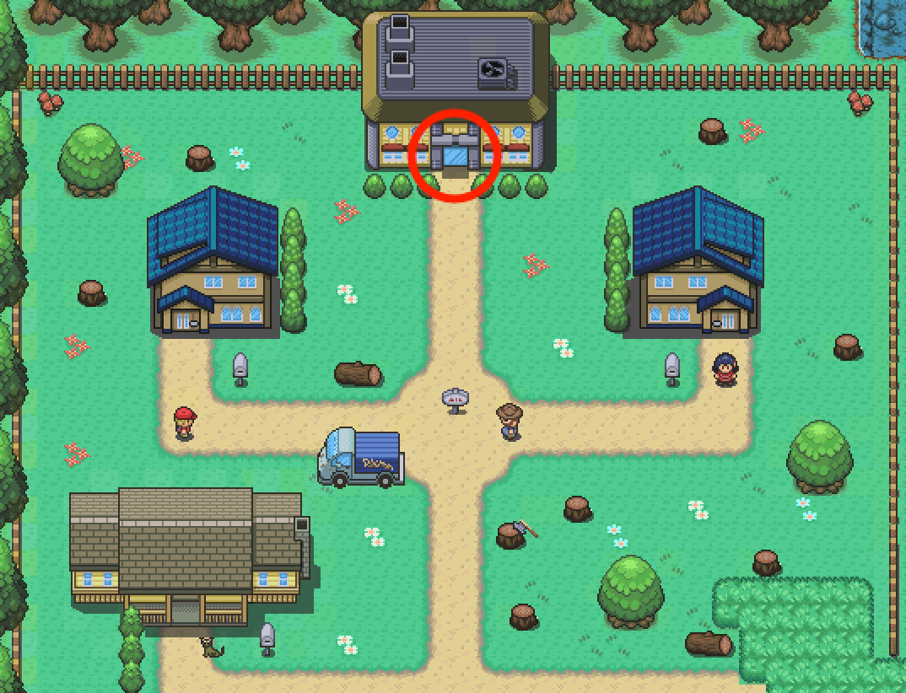
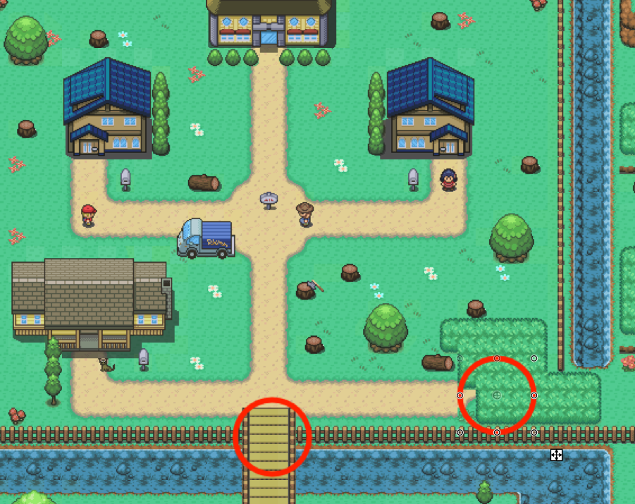
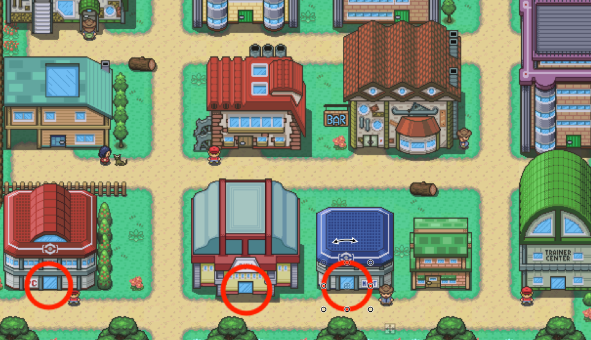
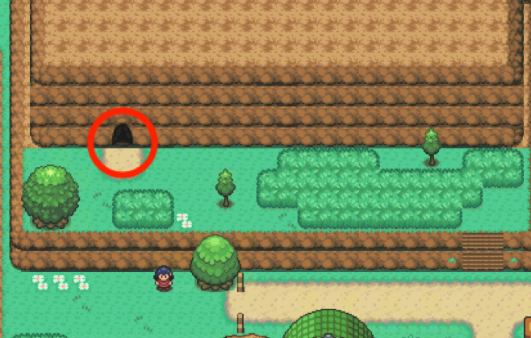

Lançado pela primeira vez em 1996 no Japão para o console Game Boy, a principal série de jogos de RPGs, que continuou em cada geração em portáteis da Nintendo. Os jogos são geralmente lançados em pares, e até agora, mais de 300 milhões de jogos de Pokémon foram vendidos em todo o mundo, em 76 títulos.
Objetivos:
Temos como objetivo criar um jogo funcional e intuitivo de Pokémon, com movimento, com sistema de lutas com JavaScript, interação e ainda mais algumas funções para adicionar mais diversão ao jogo como por exemplo: Modo Multiplayer (Local ou Online(Se possível)), Registo de informações de Login e Tabela de highscore.
Quem Somos:
Somos 3 alunos do 1º ano da licenciatura de Engenharia Geospacial da Faculdade de Ciências da Universidade de Lisboa.
Instruções:
O objectivo do nosso jogo é chegar ao fim o mais rápido possível, mas primeiro é necessário ir buscar um Pokemon ao laboratório antes de se poder entrar em áreas perigosas, começa por andar com as teclas WASD e vai até ao laboratório e escolhe o teu Pokemon com a Spacebar

Depois de escolheres o teu primeiro Pokemon, está na hora de tentares chegar à próxima cidade por um dos dois caminhos, um deles demora menos mas encontras mais Pokemons, enquanto que o outro demora mais mas encontras menos Pokemons se assim o decidires:

Se encontraes um Pokemon tens 3 opções, derrotá-lo, capturá-lo ou fugir, para o fazeres terás que usar o menu de combate, podes usar as teclas WASD para dar scroll pelo menu, Spacebar para escolher a opção, e B para voltar ao menu principal de batalha.
Agora que já chegaste à cidade, o teu objectivo é derrotar os quatro gym leaders antes de conseguires acabar o jogo, mas antes disso, se necessário podes ir ao PokeMart restaurar as tuas potions e ao PokeCenter para restaurar a vida dos teus Pokemons:

Depois de derrotares os 4 gym leaders, podes continuar a fazer o que quiseres se assim o preferires ou podes tentar fazer um highscore e acabar em tempo recorde (Tens que dar Login para o teu highscore ser guardado), para isso tens que te dirigir à caverna e chegar ao fim dela mas cuidado! Com cada passo na caverna, podes encontrar um Pokemon que te vai atacar!

Ou seja, para acabar o jogo tens que:
Ir buscar um Pokemon ao laboratório
Escolher um dos dois caminhos para chegar à cidade